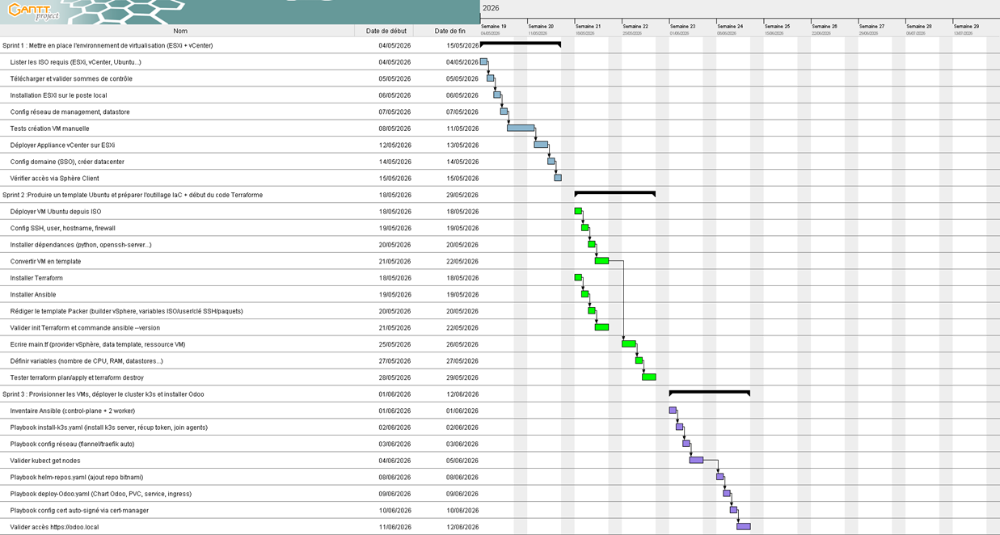
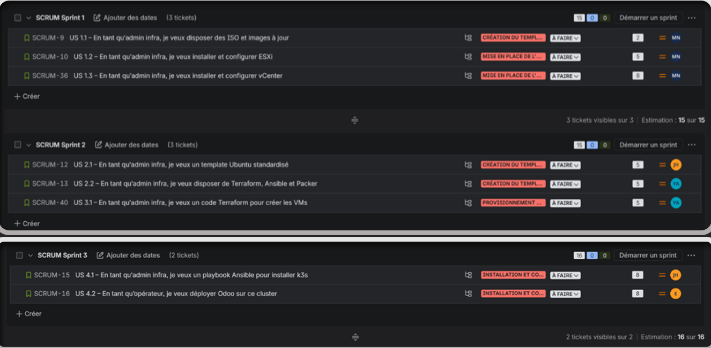
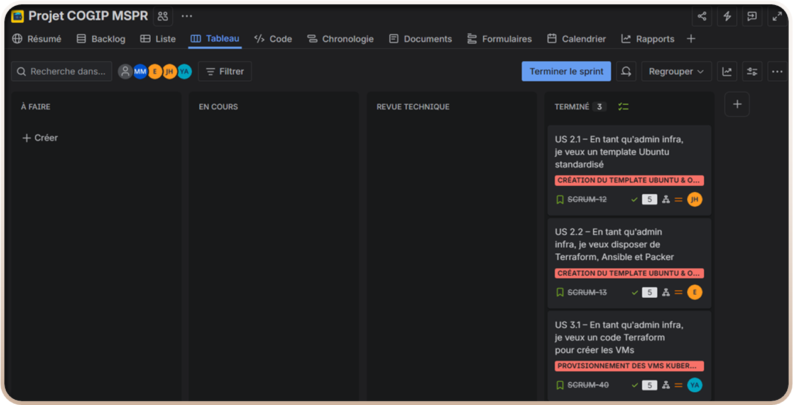
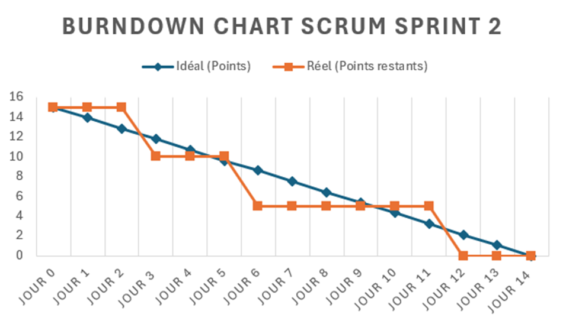

Pilotage et mise en œuvre d’un projet d’infrastructure cloud pour une entreprise fictive (COGIP), combinant gouvernance agile, automatisation DevOps (Terraform, Packer, Ansible) et déploiement applicatif (Kubernetes, Odoo).
Cette mission s’inscrit dans un contexte de transformation digitale d’une entreprise fictive (COGIP) souhaitant moderniser son système d’information et accélérer le déploiement de ses services métiers. L’infrastructure existante reposait sur des processus manuels, limitant la capacité d’évolution et la sécurité.
L’objectif principal était d’mettre en place une approche agile et automatisée, permettant de piloter le projet de bout en bout, de la conception de l’architecture au déploiement d'un ERP (Odoo), en s’appuyant sur l'Infrastructure as Code (IaC) et la conteneurisation.
Le projet a été structuré autour d’une approche agile de type Scrum (Sprints, Mêlée quotidienne, Rétrospectives). Cette organisation a favorisé la collaboration entre l'équipe IT et les parties prenantes, permettant d’itérer rapidement et de sécuriser les livraisons (POC Kubernetes, Déploiements IaC).




Terraform a été utilisé pour concevoir et déployer l’infrastructure cloud de manière standardisée et reproductible. Cette approche déclarative a permis de réduire les interventions manuelles sur l'hyperviseur et d’accélérer la création des environnements virtuels.

Pour garantir un socle technique homogène, Packer a été intégré à la chaîne DevOps afin de générer des images systèmes (Templates) prêtes à l’emploi pour l'hyperviseur ESXi.

Une fois l'infrastructure provisionnée, Ansible a pris le relais pour automatiser la configuration interne des serveurs (Playbooks). Cela assure une configuration traçable et sans erreur sur l’ensemble du parc.


Pour répondre au besoin d'évolutivité de la COGIP, un cluster Kubernetes léger (K3s) a été déployé. Il héberge l'ERP Odoo dans des conteneurs, garantissant la haute disponibilité et la résilience de l'application métier.


Cette mission a permis de livrer un Proof of Concept (PoC) complet d'une infrastructure cloud automatisée, tout en structurant une gouvernance projet agile. La chaîne DevOps (Packer > Terraform > Ansible > Kubernetes) a drastiquement réduit les délais de déploiement et sécurisé les livraisons.
Ce projet m’a permis de consolider mon positionnement hybride entre pilotage de projet (Scrum/Jira) et ingénierie DevOps. J’ai renforcé ma capacité à automatiser de bout en bout une infrastructure complexe. J’ai également développé une vision globale du cycle de vie des services IT, de la conception (IaC) jusqu’à l'orchestration des conteneurs en production.
Ce projet démontre ma capacité à allier pilotage Agile et maîtrise d'une chaîne DevOps complète.